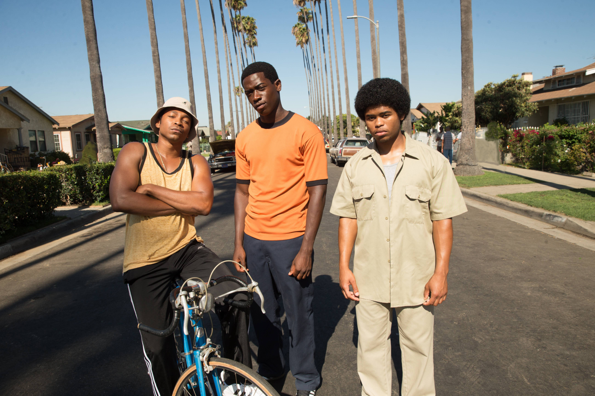
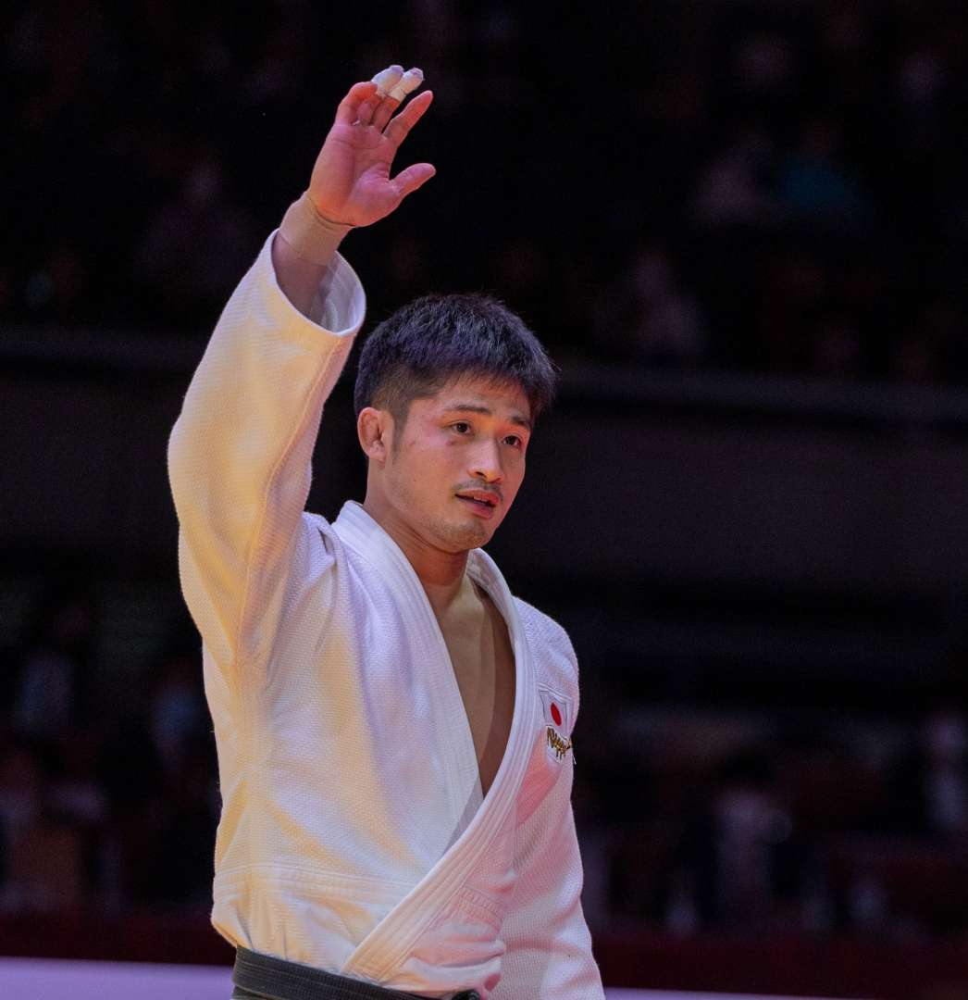

Groza Vasile
|
Student iT Specialist Ro En +37367666668 vasilegroza224@gmail.com |
Highly motivated student with a strong passion for continuous improvement, both academically and physically. Disciplined and goal-oriented, with experience in strength training and judo, which have developed focus, perseverance, and resilience. Quick to learn new skills, adaptable in dynamic environments, and able to work independently or as part of a team. Demonstrates excellent time management and a strong work ethic, balancing school responsibilities with intensive physical training. |

|
 |  |
Experience
Student 02/2013 - Current
Student in "Miron Costin" Theoretical High School, Florești, MD
• Participated actively in classroom discussions and group projects, demonstrating strong communication and collaboration skills.
• Created lesson plans and chose supporting materials to promote positive learning experiences.
• Took initiative in organizing study sessions and sharing useful learning materials with peers.
• Engaged in presentations and class debates to build confidence in public speaking and critical thinking.
Studying Networking 04/2025 - Current
Studying Networking involves learning about the design, implementation, and management of computer networks. This includes understanding how devices communicate, configuring routers and switches, managing network security, and troubleshooting connectivity issues. Networking knowledge is essential for enabling efficient data exchange and maintaining secure and reliable IT systems.